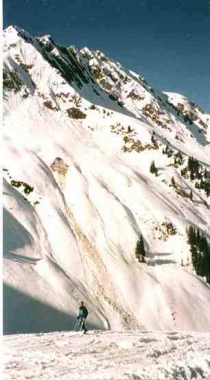

<html>

<head><!-- Created with AOLpress/2.0 -->

<title>JOE'S</title>
</head>

<body>

<p align="Center"></p>

<p align="Center">(A natural granular flow, Pass Thurn, Kitzbühel, Austria, March 2000) </p>

<p align="Center"><big><big><big>Joseph D. Seymour</big></big></big> </p>

<blockquote>
  <blockquote>
    <p class="Standard1" align="center" style="text-align: center;"><span lang="DE">New Mexico
    Resonance </span><br>
    <span lang="DE" style="font-size:10.0pt">&#145;a nonprofit research corporation&#146;</span><br>
    2301 Yale Blvd. SE Suite C1<br>
    Albuquerque, New Mexico 87106<br>
    telephone (505) 244-0017; fax (505) 244-0018<br>
    email <a href="mailto:jseymour@nmr.org">jseymour@nmr.org</a><br>
    </p>
    <p class="Standard1" style="mso-pagination:widow-orphan"><span lang="DE">&nbsp;<o:p><b
    style="mso-bidi-font-weight:
normal"><u>Education</u></b></span></p>
    <p class="Standard1" style="margin-left:35.0pt;mso-pagination:widow-orphan"><span
    lang="DE">Ph.D. in Chemical Engineering (Minor: Applied Mathematics), December 1994<br>
    University of California, Davis<br>
    Thesis: Nuclear Magnetic Resonance (NMR) Imaging Studies of Two Phase <br>
    Flow Phenomena: Application to Suspension Rheology<br>
    G.P.A.: 3.85/4.00; Nestlé Graduate Fellow 1991-1994<br>
    Advisor: Michael J. McCarthy&nbsp;<o:p></o:p></span></p>
    <p class="Standard1" style="margin-left:35.0pt;mso-pagination:widow-orphan"><span
    lang="DE">M.S. in Chemical Engineering, June 1992<br>
    University of California, Davis<br>
    Thesis: none (course work M.S.)</span></p>
    <p class="Standard1" style="margin-left:35.0pt;mso-pagination:widow-orphan"><span
    lang="DE">B.S. in Chemical Engineering, May 1990<br>
    Florida State University</span></p>
    <p class="Standard1" style="mso-pagination:widow-orphan"><b
    style="mso-bidi-font-weight:
normal"><u><span lang="DE">Experience</span></u></b></p>
    <p class="Standard1" style="margin-left:35.0pt;mso-pagination:widow-orphan"><span
    lang="DE">Staff Scientist utilizing dynamic Nuclear Magnetic Resonance methods to study
    fluid dynamics and transport phenomena in complex systems, e.g. porous media, solid-liquid
    suspensions, granular media and turbulent flows, for application to environmental,
    geophysical and industrial problems. New Mexico Resonance, Albuquerque, NM, current.</span></p>
    <p class="Standard1" style="margin-left:35.0pt;mso-pagination:widow-orphan"><span
    lang="DE">Alexander von Humboldt Fellow studying correlations between structure and
    transport in model percolation structure porous media using Nuclear Magnetic Resonance.
    Sektion Kernresonanzspektroskopie, Universität Ulm, Ulm Germany, 2000-2001.</span></p>
    <p class="Standard1" style="margin-left:35.0pt;mso-pagination:widow-orphan"><span
    lang="DE">Postdoctoral Fellow participating in development of rapid NMR imaging system and
    conducting studies of complex fluid dynamics in porous media, solid-liquid suspensions,
    granular media and turbulent flows using NMR techniques. Institute for Basic and Applied
    Medical Research, The Lovelace Institutes, Albuquerque, NM, 1996-1997.</span></p>
    <p class="Standard1" style="margin-left:35.0pt;mso-pagination:widow-orphan"><span
    lang="DE">NSF International Program Postdoctoral Fellow executing funded research proposal
    for on site and laboratory study of Antarctic sea ice structure using nuclear magnetic
    resonance. Project furthered development of Earth&#146;s field NMR apparatus for on site
    studies, required management of NSF research budget and international cross disciplinary
    scientific interaction. Department of Physics, Massey University, New Zealand, 1995-1996. </span></p>
    <p class="Standard1" style="margin-left:35.0pt;mso-pagination:widow-orphan"><span
    lang="DE">Consultant on removal and remediation of a leaking underground gasoline storage
    tank, acting as liason between property owner and environmental consulting firm. Evergreen
    Colf Club, Elkhorn, WI, 1995-present.</span></p>
    <p class="Standard1" style="margin-left:35.0pt;mso-pagination:widow-orphan"><span
    lang="DE">Research/Teaching Assistant in chemical engineering conducting theoretical and
    experimental analysis of single and multi-phase materials using NMR and classical
    rheological techniques. Assisted in preparation of research proposals and reviews of
    articles submitted for journal publication. Departments of Chemical Engineering and Food
    Science and Technology, University of California , Davis, 1990-1994.</span></p>
    <p class="Standard1" style="margin-left:35.0pt;mso-pagination:widow-orphan"><span
    lang="DE">Chair and Faculty Representative (1992-1994)/Industrial Representative
    (1991-1992) UC Davis Chemical Engineering Graduate Student Organization. Duties included
    participating in faculty meetings, development of graduate student policy to facilitate
    advisor student interactions and graduate curricula .</span></p>
    <p class="Standard1" style="mso-pagination:widow-orphan"><b
    style="mso-bidi-font-weight:
normal"><u><span lang="DE">Honors</span></u></b></p>
    <p class="Standard1" style="margin-left:35.0pt;mso-pagination:widow-orphan"><span
    lang="DE">Alexander von Humboldt Research Fellow, 2000-2001. National Science Foundation
    International Program Postdoctoral Fellowship, 1995-1996.</span></p>
    <p class="Standard1" style="margin-left:35.0pt;mso-pagination:widow-orphan"><span
    lang="DE">Nestlé Doctoral Research Fellowship, Dept. of Food Science and Technology, UC
    Davis, 1991-1994.</span></p>
    <p class="Standard1" style="margin-left:35.0pt;mso-pagination:widow-orphan"><span
    lang="DE">Jastro-Shields Graduate Research Scholarship, UC Davis, 1991.</span></p>
    <p class="Standard1" style="margin-left:35.0pt;mso-pagination:widow-orphan"><span
    lang="DE">Shell Oil Fellowship, Dept. of Chemical Engineering, UC Davis, 1990-1991.</span></p>
    <p class="Standard1" style="margin-left:.5in;mso-pagination:widow-orphan"><span lang="DE">First
    Place AIChE Student Poster Competition, Food, Pharmaceutical and Bioengineering Section,
    Los Angeles, 1991.</span></p>
    <p class="Standard1" style="mso-pagination:widow-orphan"><span lang="DE"><o:p></o:p><b
    style="mso-bidi-font-weight:
normal"><u>Professional Society Affiliations</u></b></span></p>
    <p class="Standard1" style="margin-left:35.0pt;mso-pagination:widow-orphan"><span
    lang="DE">American Institute of Chemical Engineers </span></p>
    <p class="Standard1" style="margin-left:35.0pt;mso-pagination:widow-orphan"><span
    lang="DE">Society of Rheology, American Institute of Physics</span></p>
    <p class="Standard1" style="margin-left:35.0pt;mso-pagination:widow-orphan"><span
    lang="DE">American Society of Engineering Education</span></p>
    <p class="Standard1" style="mso-pagination:widow-orphan"><b
    style="mso-bidi-font-weight:
normal"><u><span lang="DE">Professional Meeting
    Presentations</span></u></b></p>
    <p class="Standard1" style="mso-pagination:widow-orphan"><span lang="DE">(* indicates
    presented by J.D. Seymour)</span></p>
    <p class="Standard1" style="margin-left:35.0pt;mso-pagination:widow-orphan"><span
    lang="DE">1.*<span style="mso-spacerun: yes">&nbsp;&nbsp;&nbsp;&nbsp; </span><u>J.D.
    Seymour</u>, K.L. McCarthy, M.J. McCarthy and R.L. Powell. &quot;Flow characterization of
    opaque suspensions.&quot; 8<sup>th</sup> World Congress of Food Science and Technology
    (IUFoST). Toronto, Canada. September 29-October 4, 1991. Abstract No. P166</span></p>
    <p class="Standard1" style="margin-left:35.0pt;mso-pagination:widow-orphan"><span
    lang="DE"><o:p></o:p>2.*<span style="mso-spacerun: yes">&nbsp;&nbsp;&nbsp;&nbsp; </span><u>J.D.
    Seymour</u>, J.E. Maneval, M.J. McCarthy, K.L. McCarthy and R.L. Powell. &quot;NMRI
    velocity measurements of fibrous suspensions.&quot; Annual Meeting of the American
    Institute of Chemical Engineers. Los Angeles, CA. November 17-22, 1991. Abstract 180b in
    Extended Abstracts.</span></p>
    <p class="Standard1" style="margin-left:35.0pt;mso-pagination:widow-orphan"><span
    lang="DE"><o:p></o:p>3.*<span style="mso-spacerun: yes">&nbsp;&nbsp;&nbsp;&nbsp; </span><u>J.D.
    Seymour</u>, R.L. Powell, K.L. McCarthy and M.J. McCarthy. &quot;Velocity distribution
    measurements in opaque suspensions by NMRI.&quot; Annual Meeting of the American Institute
    of Chemical Engineers. Los Angeles, CA. November 17-22, 1991. Poster No. 231-15d. First
    Place AIChE Student Poster Paper Competition Sec 15.</span></p>
    <p class="Standard1" style="margin-left:35.0pt;mso-pagination:widow-orphan"><span
    lang="DE">4.*<span style="mso-spacerun: yes">&nbsp;&nbsp;&nbsp;&nbsp; </span><u>J.D.
    Seymour</u>, R.L. Powell, K.L. McCarthy, J.E. Maneval and M.J. McCarthy.
    &quot;Determination of rheological parameters by NMR.&quot; Annual Meeting Institute of
    Food Technologists. New Orleans, LA. June 20-24, 1992. Abstract No. 167.</span></p>
    <p class="Standard1" style="margin-left:35.0pt;mso-pagination:widow-orphan"><span
    lang="DE">5.<span style="mso-spacerun: yes">&nbsp;&nbsp;&nbsp;&nbsp;&nbsp; </span>K.L.
    McCarthy and <u>J.D. Seymour</u>. &quot;A fundamental approach for the relationship
    between the Bostwick measurement and fluid viscosity.&quot; Annual Meeting Institute of
    Food Technologists. New Orleans, LA. June 20-24, 1992. Abstract No. 70.</span></p>
    <p class="Standard1" style="margin-left:35.0pt;mso-pagination:widow-orphan"><span
    lang="DE">6.*<span style="mso-spacerun: yes">&nbsp;&nbsp;&nbsp;&nbsp; </span><u>J.D.
    Seymour</u>, M.J. McCarthy, K.L. McCarthy, R.L. Powell and J.E. Maneval. &quot;Rheological
    measurements using NMR imaging and spectroscopy.&quot; Summer Meeting of the American
    Institute of Chemical Engineers. Minneapolis, MN. August 9-12, 1992. Abstract 5e in
    Extended Abstracts.</span></p>
    <p class="Standard1" style="margin-left:35.0pt;mso-pagination:widow-orphan"><span
    lang="DE">7.<span style="mso-spacerun: yes">&nbsp;&nbsp;&nbsp;&nbsp;&nbsp; </span>J.E.
    Maneval, <u>J.D. Seymour</u>, R.L. Powell, M.J. McCarthy and K.L. McCarthy.
    &quot;Application of nuclear magnetic resonance to the rheological characterization of
    non-Newtonian fluids.&quot; Annual Meeting of the American Institute of Chemical
    Engineers. Miami, FL. November 1-6, 1992. Abstract 80h in Extended Abstracts.</span></p>
    <p class="Standard1" style="margin-left:35.0pt;mso-pagination:widow-orphan"><span
    lang="DE">8.<span style="mso-spacerun: yes">&nbsp;&nbsp;&nbsp;&nbsp;&nbsp; </span>M.J.
    McCarthy, <u>J.D. Seymour</u>, K.L. McCarthy, and R.L. Powell. &quot;Measurement of
    material properties in heterogeneous food systems by magnetic resonance imaging.&quot;
    Sixth International Conference on Engineering and Food. Chiba, Japan. May 1993. Abstract
    No. 128 in Extended Abstracts.</span></p>
    <p class="Standard1" style="margin-left:35.0pt;mso-pagination:widow-orphan"><span
    lang="DE">9.<span style="mso-spacerun: yes">&nbsp;&nbsp; </span><span
    style="mso-spacerun:
yes">&nbsp;&nbsp;&nbsp;</span>K.L. McCarthy and <u>J.D. Seymour</u>.
    &quot;The theoretical relationship between the Bostwick measurement and fluid viscosity
    for power law foods.&quot; Annual Meeting Institute of Food Technologists. Chicago, IL.
    July 10-14, 1993.<span style="mso-spacerun: yes">&nbsp;</span>Abstract No. 29.</span></p>
    <p class="Standard1" style="margin-left:35.0pt;mso-pagination:widow-orphan"><span
    lang="DE">10.<span style="mso-spacerun: yes">&nbsp;&nbsp;&nbsp;&nbsp; </span>T.Q. Li, <u>J.D.
    Seymour</u>, R.L. Powell, K.L. McCarthy, L. Odberg and&nbsp; M.J. McCarthy.
    &quot;Quantification of turbulent flow by phase encode NMR imaging.&quot; 12<sup>th</sup>
    Annual Meeting of the Society of Magnetic Resonance in Medicine. New York, NY. August
    14-20, 1993. Poster No. 653.</span></p>
    <p class="Standard1" style="margin-left:35.0pt;mso-pagination:widow-orphan"><span
    lang="DE">11.*<span style="mso-spacerun: yes">&nbsp;&nbsp;&nbsp; </span><u>J.D. Seymour</u>,
    R.L. Powell, K.L. McCarthy and M.J. McCarthy. &quot;Velocity measurements in two-phase
    flow by an NMR phase encode method.&quot; 65<sup>th</sup> Annual Meeting of the Society of
    Rheology. Boston, MA. October 17-21, 1993. Abstract No. S21.</span></p>
    <p class="Standard1" style="margin-left:35.0pt;mso-pagination:widow-orphan"><span
    lang="DE">12.<span style="mso-spacerun: yes">&nbsp;&nbsp;&nbsp;&nbsp; </span>T.Q. Li, M.J.
    McCarthy, K.L. McCarthy, <u>J.D. Seymour</u>, L. Odberg and R.L. Powell. &quot;Velocity
    measurements of fiber suspensions in pipe flow by nuclear magnetic resonance
    imaging.&quot; Annual Meeting of the American Institute of Chemical Engineers. St. Louis,
    MO. November 7-12, 1993. Abstract 63j in Extended Abstracts.</span></p>
    <p class="Standard1" style="margin-left:35.0pt;mso-pagination:widow-orphan"><span
    lang="DE">13.*<span style="mso-spacerun: yes">&nbsp;&nbsp;&nbsp; </span><u>J.D. Seymour</u>,
    K.L. McCarthy, R.L. Powell and M.J. McCarthy. &quot;Interpretation of NMR velocity phase
    encode measurements in two-phase flow: comparison between experiment and theory.&quot; 35<sup>th</sup>
    Experimental Nuclear Magnetic Resonance Conference. Asilomar Conference Center, Pacific
    Grove, CA. April 10-15, 1994. Abstract No. 358.</span></p>
    <p class="Standard1" style="margin-left:35.0pt;mso-pagination:widow-orphan"><span
    lang="DE">14.*<span style="mso-spacerun: yes">&nbsp;&nbsp;&nbsp; </span><u>J.D. Seymour</u>,
    K.L. McCarthy, R.L. Powell and M.J. McCarthy. &quot;NMR velocity measurements in fiber
    suspensions.&quot; American Chemical Society Sacramento Section Meeting. Sacramento, CA.
    October 19-22, 1994.&nbsp;<o:p></o:p></span></p>
    <p class="Standard1" style="margin-left:35.0pt;mso-pagination:widow-orphan"><span
    lang="DE">15.<span style="mso-spacerun: yes">&nbsp;&nbsp;&nbsp;&nbsp; </span>R.L. Powell, <u>J.D.
    Seymour</u>, M.J. McCarthy and K.L. McCarthy. &#147;Nuclear magnetic resonance imaging
    measurements of spherical particle suspensions during flow.&#148; Proceedings of the 1995
    TAPPI Coating Fundamentals Symposium. Dallas, TX. Extended Abstract p. 179-183.</span></p>
    <p class="Standard1" style="margin-left:35.0pt;mso-pagination:widow-orphan"><span
    lang="DE">16.<span style="mso-spacerun: yes">&nbsp;&nbsp;&nbsp;&nbsp; </span>P.T.
    Callaghan, C.D. Eccles and <u>J.D. Seymour</u>. &#147;Antarctic NMR.&#148; 37<sup>th</sup>
    Experimental Nuclear Magnetic Resonance Conference. Asilomar Conference Center, Pacific
    Grove, CA. March 17-22, 1996. Invited Talk WOam 8:00.<o:p></o:p></span></p>
    <p class="Standard1" style="margin-left:35.0pt;mso-pagination:widow-orphan"><span
    lang="DE">17.*<span style="mso-spacerun: yes">&nbsp;&nbsp;&nbsp; </span>P.T. Callaghan,
    C.D. Eccles and <u>J.D. Seymour</u>. &#147;NMR studies of brine content and diffusion in
    Antarctic sea ice.&#148; 37<sup>th</sup> Experimental Nuclear Magnetic Resonance
    Conference. Asilomar Conference Center, Pacific Grove, CA. March 17-22, 1996. Abstract No.
    302.</span></p>
    <p class="Standard1" style="margin-left:35.0pt;mso-pagination:widow-orphan"><span
    lang="DE">18.*<span style="mso-spacerun: yes">&nbsp;&nbsp;&nbsp; </span><u>J.D. Seymour</u>,
    and P.T. Callaghan. &#147;PGSE NMR and hydrodynamic dispersion.&#148; 37<sup>th</sup>
    Experimental Nuclear Magnetic Resonance Conference. Asilomar Conference Center, Pacific
    Grove, CA. March 17-22, 1996. Abstract No. 296.</span></p>
    <p class="Standard1" style="margin-left:35.0pt;mso-pagination:widow-orphan"><span
    lang="DE">19.*<span style="mso-spacerun: yes">&nbsp;&nbsp;&nbsp; </span><u>J.D. Seymour</u>,
    and E. Fukushima. &#147;A general stochastic dynamics analysis for Pulsed and Modulated
    Gradient Spin Echo NMR measurements of flow in complex systems.&#148; 1997 Gordon Research
    Conference on Magnetic Resonance. New England College, Henniker, NH. June 22-27, 1997.</span></p>
    <p class="Standard1" style="margin-left:35.0pt;mso-pagination:widow-orphan"><span
    lang="DE">20.*<span style="mso-spacerun: yes">&nbsp;&nbsp;&nbsp; </span><u>J.D. Seymour</u>,
    S.A. Altobelli, P.T. Callaghan, E. Fukushima and B. Manz. &#147;PGSE NMR measurements of
    Taylor vortices in concentric and eccentric cylinders.&#148; 39<sup>th</sup><b
    style="mso-bidi-font-weight:normal"> </b>Rocky Mountain Conference on Analytical
    Chemistry, Symposium on NMR. Denver, CO. August 3-7, 1997. Session IX Talk 2:30 pm.</span></p>
    <p class="Standard1" style="margin-left:35.0pt;mso-pagination:widow-orphan"><span
    lang="DE">21.*<span style="mso-spacerun: yes">&nbsp;&nbsp;&nbsp; </span>P.T. Callaghan,
    S.L. Codd and<u> J.D. Seymour</u>. &#147;Probing Taylor dispersion in Poiseuille flow
    using PGSE NMR.&#148; 39<sup>th</sup> Experimental Nuclear Magnetic Resonance Conference.
    Asilomar Conference Center, Pacific Grove, CA. March 22-27, 1998. Abstract No. M/T P204.
    21.</span></p>
    <p class="Standard1" style="margin-left:35.0pt;mso-pagination:widow-orphan"><span
    lang="DE">22.<span style="mso-spacerun: yes">&nbsp;&nbsp;&nbsp;&nbsp; </span>S.L. Codd, <u>J.D.
    Seymour</u> and<u> </u>P.T. Callaghan,. &#147;Probing Taylor dispersion in Poiseuille flow
    using PGSE NMR.&#148; AMPERE Conference. Berlin,. August 3-7, 1998. Abstract No..</span></p>
    <p class="Standard1" style="margin-left:35.0pt;mso-pagination:widow-orphan"><span
    lang="DE">23.<span style="mso-spacerun: yes">&nbsp;&nbsp;&nbsp;&nbsp; </span>P.T.
    Callaghan, R. Dykstra, C.D. Eccles and <u>J.D. Seymour</u>. &#147;Antarctic field work and
    the brine mobility in the sea ice.&#148; Society for Experimental Geophysics Summer
    Research Workshop NMR Imaging of Reservoir Attributes, Park City, Utah. August 9-12, 1998.</span></p>
    <p class="Standard1" style="margin-left:35.0pt;mso-pagination:widow-orphan"><span
    lang="DE">24.*<span style="mso-spacerun: yes">&nbsp;&nbsp;&nbsp; </span><u>J.D. Seymour</u>,
    and P.T. Callaghan. &#147;Pulsed gradient spin echo (PGSE) nuclear magnetic resonance
    (NMR) studies of flow and dispersion in a model porous media.&#148; Society for
    Experimental Geophysics Summer Research Workshop NMR Imaging of Reservoir Attributes, Park
    City, Utah. August 9-12, 1998.</span></p>
    <p class="Standard1" style="margin-left:35.0pt;mso-pagination:widow-orphan"><span
    lang="DE">25.*<span style="mso-spacerun: yes">&nbsp;&nbsp;&nbsp; </span><u>J.D. Seymour</u>,
    P.T. Callaghan, R. Dykstra and C.D. Eccles. &#147;Restricted diffusion and thermal
    instabilities in Antarctic sea ice brine: PGSE NMR in the Earth&#146;s magnetic
    field.&#148; AMPERE Workshop on Porous Systems and Systems with Restricted Geometry,
    Delphi, Greece. August 23-28, 1998. Special Talk.</span></p>
    <p class="Standard1" style="margin-left:35.0pt;mso-pagination:widow-orphan"><span
    lang="DE">26.*<span style="mso-spacerun: yes">&nbsp;&nbsp;&nbsp; </span><u>J.D. Seymour</u>,
    and P.T. Callaghan. &#147;Pulsed gradient spin echo (PGSE) nuclear magnetic resonance
    (NMR) studies of flow and dispersion in a model porous media.&#148; AMPERE Workshop on
    Porous Systems and Systems with Restricted Geometry, Delphi, Greece. August 23-28, 1998.
    Plenary Lecture.</span></p>
    <p class="Standard1" style="margin-left:35.0pt;mso-pagination:widow-orphan"><span
    lang="DE">27.<span style="mso-spacerun: yes">&nbsp;&nbsp;&nbsp;&nbsp; </span>S. A.
    Altobelli, <u>J. D. Seymour</u>, and L. A. Mondy, &quot;NMR imaging of batch flotation and
    sedimentation,&quot; 70<sup>th</sup> Annual Meeting, Society of Rheology, Monterey,
    October 4-8, 1998.</span></p>
    <p class="Standard1" style="margin-left:35.0pt;mso-pagination:widow-orphan"><span
    lang="DE">28.*<span style="mso-spacerun: yes">&nbsp;&nbsp;&nbsp; </span><u>J. D. Seymour</u>.
    &quot;Complex Flows, Stochastic Processes and Pulsed Field Gradient Spin Echo NMR.&quot;
    AMPERE VII NMR School in Zakopane, Poland, May 30-June 4, 1999.</span></p>
    <p class="Standard1" style="margin-left:35.0pt;mso-pagination:widow-orphan"><span
    lang="DE">29.<span style="mso-spacerun: yes">&nbsp;&nbsp;&nbsp;&nbsp; </span>A. Caprihan, <u>J.
    D. Seymour</u>, S. A. Altobelli, and E. Fukushima. &quot;Velocity fluctuation measurements
    of granular media in a rotating cylinder by nuclear magnetic resonance imaging.&quot;
    IUTAM Symposium on Segregation in Granular Flows, Cape May, NJ, June 6-9, 1999.</span></p>
    <p class="Standard1" style="margin-left:35.0pt;mso-pagination:widow-orphan"><span
    lang="DE">30.<span style="mso-spacerun: yes">&nbsp;&nbsp;&nbsp;&nbsp; </span>S. A.
    Altobelli, J. D. Seymour and L. Mondy. &#147;Settling in concentrated suspensions.&#148; 5<sup>th</sup>
    International Conference on Magnetic Resonance Microscopy, Heidelberg, Germany, September
    5-9, 1999.</span></p>
    <p class="Standard1" style="margin-left:35.0pt;mso-pagination:widow-orphan"><span
    lang="DE">31.<span style="mso-spacerun: yes">&nbsp;&nbsp;&nbsp;&nbsp; </span>S. A.
    Altobelli, A. Caprihan, E. Fukushima and <u>J. D. Seymour</u>. &#147;Nuclear magnetic
    resonance studies of granular flows-current status.&#148; Spring Meeting of the Materials
    Research Society, San Francisco, CA, April 24-28, 2000. Talk BB2.1</span></p>
    <p class="Standard1" style="margin-left:35.0pt;mso-pagination:widow-orphan"><span
    lang="DE">32.*<span style="mso-spacerun: yes">&nbsp;&nbsp;&nbsp; </span><u>J. D. Seymour</u>,
    A. Caprihan, S. A. Altobelli, and E. Fukushima. &quot;NMR imaging of transport phenomena
    in granular flow.&quot; 30<sup>th</sup> Congress AMPERE on Magnetic Resonance and Related
    Phenomena, Lisbon, Portugal, July 23-29, 2000.</span></p>
    <p class="Standard1" style="margin-left:35.0pt;mso-pagination:widow-orphan"><span
    lang="DE">33.*<span style="mso-spacerun: yes">&nbsp;&nbsp;&nbsp; </span><u>J.D. Seymour</u>.
    &quot;Macroscopic transport phenomena measurements by nuclear magnetic resonance:
    Application to granular materials and porous media.&quot; AMPERE Summer School on
    Applications of Magnetic Resonance in Novel Materials, Nafplion, Greece. September 3-9,
    2000. Plenary Lecture.</span></p>
    <p class="Standard1" style="margin-left:35.0pt;mso-pagination:widow-orphan"><span
    lang="DE">34.<span style="mso-spacerun: yes">&nbsp;&nbsp;&nbsp;&nbsp; </span>A. Caprihan,
    E. Fukushima and <u>J.D. Seymour</u>. &#147;Manipulation of PGSE sequences to measure
    collisions in granular flow.&#148; 42<sup>nd</sup> Experimental Nuclear Magnetic Resonance
    Conference, Orlando, FL. March 11-16, 2001.</span></p>
    <p class="Standard1" style="mso-pagination:widow-orphan"><b
    style="mso-bidi-font-weight:
normal"><u><span lang="DE">Invited Lectures<o:p></o:p></span></u></b></p>
    <p class="Standard1" style="margin-left:35.0pt;mso-pagination:widow-orphan"><span
    lang="DE">1.<span style="mso-spacerun: yes">&nbsp;&nbsp;&nbsp;&nbsp;&nbsp; </span>&quot;Laboratory
    and field studies of Antarctic sea ice morphology using nuclear magnetic resonance.&quot;
    Dept. of Physics, Victoria University, Wellington, New Zealand. May 1996.</span></p>
    <p class="Standard1" style="margin-left:35.0pt;mso-pagination:widow-orphan"><span
    lang="DE">2.<span style="mso-spacerun: yes">&nbsp;&nbsp;&nbsp;&nbsp;&nbsp; </span>&quot;Some
    random thoughts on stochastic processes and transport phenomena.&quot; Mathematical
    Physics Seminar, Dept. of Physics and Dept. of Mathematics, Massey University, Palmerston
    North, New Zealand. June 1996.</span></p>
    <p class="Standard1" style="margin-left:35.0pt;mso-pagination:widow-orphan"><span
    lang="DE">3.<span style="mso-spacerun: yes">&nbsp;&nbsp;&nbsp;&nbsp;&nbsp; </span>&quot;Nuclear
    magnetic resonance studies of fluid food and suspension rheology.&quot; Dept. of Food
    Technology, Massey University, Palmerston North, New Zealand. June 1996.</span></p>
    <p class="Standard1" style="margin-left:35.0pt;mso-pagination:widow-orphan"><span
    lang="DE">4.<span style="mso-spacerun: yes">&nbsp;&nbsp; </span><span
    style="mso-spacerun:
yes">&nbsp;&nbsp;&nbsp;</span>&quot;The global climate, Antarctic
    sea ice and nuclear magnetic resonance.&quot; 8th Grade High Interest Science Class,
    Elkhorn Area Middle School, Elkhorn, Wisconsin. October, 1996.</span></p>
    <p class="Standard1" style="margin-left:35.0pt;mso-pagination:widow-orphan"><span
    lang="DE">5.<span style="mso-spacerun: yes">&nbsp;&nbsp;&nbsp;&nbsp;&nbsp; </span>&quot;Application
    of PGSE NMR to the study of flow and dispersion in porous media, hydrodynamic
    instabilities and Antarctic sea ice morphology.&quot; Center for Advanced Studies, Dept.
    of Physics, University of New Mexico, Albuquerque, New Mexico. October 1996.</span></p>
    <p class="Standard1" style="margin-left:35.0pt;mso-pagination:widow-orphan"><span
    lang="DE">6.<span style="mso-spacerun: yes">&nbsp;&nbsp;&nbsp;&nbsp;&nbsp; </span>&quot;Application
    of pulsed gradient spin echo NMR studies of flow and dispersion in porous media and
    hydrodynamic instabilities.&quot; Div. of Engineering, Colorado School of Mines, Golden,
    Colorado. January, 1997.</span></p>
    <p class="Standard1" style="margin-left:35.0pt;mso-pagination:widow-orphan"><span
    lang="DE">7.<span style="mso-spacerun: yes">&nbsp;&nbsp;&nbsp;&nbsp;&nbsp; </span>&quot;Pulsed
    gradient spin echo NMR studies of dispersion in porous media and hydrodynamic
    instabilities.&quot; Dept. of Chemical Engineering and National High Magnetic Field Lab,
    Florida State University, Tallahassee, Florida. January, 1997.</span></p>
    <p class="Standard1" style="margin-left:35.0pt;mso-pagination:widow-orphan"><span
    lang="DE">8.<span style="mso-spacerun: yes">&nbsp;&nbsp;&nbsp;&nbsp;&nbsp; </span>&quot;Characterization
    of Antarctic sea ice pore structure using pulsed gradient spin echo NMR in the
    Earth&#146;s magnetic field.&quot; New Mexico Regional NMR Conference, The Lovelace
    Institutes, Albuquerque, New Mexico. March, 1997.</span></p>
    <p class="Standard1" style="margin-left:35.0pt;mso-pagination:widow-orphan"><span
    lang="DE">9.<span style="mso-spacerun: yes">&nbsp;&nbsp;&nbsp;&nbsp;&nbsp; </span>&quot;Pulsed
    gradient spin echo NMR studies of flow and dispersion in a model porous media,&quot;
    International Tomography Center, Novosibirsk, Russia, September 4, 1998.</span></p>
    <p class="Standard1" style="margin-left:35.0pt;mso-pagination:widow-orphan"><span
    lang="DE">10.<span style="mso-spacerun: yes">&nbsp;&nbsp;&nbsp;&nbsp; </span>&quot;Complex
    Flows, Stochastic Processes and Pulsed Field Gradient Spin Echo NMR,&quot; AMPERE VII NMR
    School in Zakopane, Poland, May 30-June 4, 1999. </span></p>
    <p class="Standard1" style="margin-left:35.0pt;mso-pagination:widow-orphan"><span
    lang="DE">11.<span style="mso-spacerun: yes">&nbsp;&nbsp;&nbsp;&nbsp; </span>&#147;Measurement
    of Granular Dynamics Using NMR Imaging,&#148; Institute of Macromolecular Chemistry, RWTH,
    Aachen, Germany, May 16, 2000.</span></p>
    <p class="Standard1" style="margin-left:35.0pt;mso-pagination:widow-orphan"><span
    lang="DE">12.<span style="mso-spacerun: yes">&nbsp;&nbsp;&nbsp;&nbsp; </span>&quot;Macroscopic
    transport phenomena measurements by nuclear magnetic resonance : Application to granular
    materials and porous media,&quot; AMPERE Summer School on Applications of Magnetic
    Resonance in Novel Materials, Nafplion, Greece. September 3-9, 2000.</span></p>
    <p class="Standard1" style="margin-left:35.0pt;mso-pagination:widow-orphan"><span
    lang="DE">13. &quot;Transport phenomena measurements by pulsed gradient nuclear magnetic
    resonance: Wavelength and time dependence&quot; ,&#148; Institute for Physical Chemistry,
    University of Karlsruhe, Karlsruhe, Germany, October 20, 2000.</span></p>
    <p class="Standard1" style="margin-left:35.0pt;mso-pagination:widow-orphan"><span
    lang="DE">14.<span style="mso-spacerun: yes">&nbsp;&nbsp;&nbsp;&nbsp;&nbsp; </span>&quot;Science
    in Antarctica: The global climate, Antarctic sea ice and MRI.&quot; 8th Grade High
    Interest Science Class, Elkhorn Area Middle School, Elkhorn, Wisconsin. February 2, 2001.</span></p>
    <p class="Standard1" style="mso-pagination:widow-orphan"><b
    style="mso-bidi-font-weight:
normal"><u><span lang="DE">Published Conference Proceedings</span></u></b></p>
    <p class="Standard1" style="margin-left:35.0pt;mso-pagination:widow-orphan"><span
    lang="DE">R.L. Powell, <u>J.D. Seymour</u>, M.J. McCarthy, and K. McCarthy. &quot;Magnetic
    resonance imaging as a tool for rheological investigation.&quot; In, Theoretical and
    applied rheology: Proceedings of the XIth International Congress on Rheology, Brussels,
    Belgium. Eds. P.Moldenaers and R.Keunings. Elsevier Science Publishers, Amsterdam,
    Netherlands. Vol. 2. pp. 946-948. 1992.</span></p>
    <p class="Standard1" style="margin-left:35.0pt;mso-pagination:widow-orphan"><span
    lang="DE">2.<span style="mso-spacerun: yes">&nbsp;&nbsp;&nbsp;&nbsp;&nbsp; </span>M.J.
    McCarthy, K.L. McCarthy, R.L. Powell, <u>J.D. Seymour</u>, and T.Q. Li. &quot;Measurement
    of material properties in heterogeneous food systems by magnetic resonance imaging.&quot;
    Proceedings Sixth International Conference on Engineering and Food. Chiba, Japan, May
    1993.</span></p>
    <p class="Standard1" style="margin-left:35.0pt;mso-pagination:widow-orphan"><span
    lang="DE">3.<span style="mso-spacerun: yes">&nbsp;&nbsp;&nbsp;&nbsp;&nbsp; </span>S.A.
    Altobelli, A. Caprihan, E. Fukushima, and <u>J.D. Seymour</u>, &quot;Nuclear Magnetic
    Resonance Studies of Granular Flows -- Current Status,&quot; in The Granular State, Eds.
    S. Sen and M. L. Hunt, Materials Research Society Symposium Proceedings, Volume 627,
    Materials Research Society, Warrendale, Pennsylvania. pp. BB2.1.1-BB2.1.10, 2001.</span></p>
    <p class="MsoNormal"
    style="mso-layout-grid-align:auto;punctuation-wrap:hanging;
text-autospace:ideograph-numeric ideograph-other;mso-vertical-align-alt:auto"><b
    style="mso-bidi-font-weight:normal"><u>Publications</u></b></p>
    <p class="Standard1" style="margin-left:35.0pt;mso-pagination:widow-orphan"><span
    lang="DE">1.<span style="mso-spacerun: yes">&nbsp;&nbsp;&nbsp;&nbsp;&nbsp; </span>K.L.
    McCarthy and <u>J.D. Seymour</u>. &quot;A fundamental approach for the relationship
    between the Bostwick measurement and Newtonian fluid viscosity.&quot; <i
    style="mso-bidi-font-style:normal">Journal of Texture Studies</i>. <b
    style="mso-bidi-font-weight:normal">24</b> (1): 1-10.1993.</span></p>
    <p class="Standard1" style="margin-left:35.0pt;mso-pagination:widow-orphan"><span
    lang="DE">2.<span style="mso-spacerun: yes">&nbsp;&nbsp;&nbsp;&nbsp;&nbsp; </span><u>J.D.
    Seymour</u>, J.E. Maneval, K.L. McCarthy, M.J. McCarthy and R.L. Powell. &quot;NMR
    velocity phase encoded measurements of fibrous suspensions.&quot; <i
    style="mso-bidi-font-style:normal">Physics of Fluids A: Fluid Dynamics</i>. <b
    style="mso-bidi-font-weight:normal">5</b> (11): 3010-3012. 1993.</span></p>
    <p class="Standard1" style="margin-left:35.0pt;mso-pagination:widow-orphan"><span
    lang="DE">3.<span style="mso-spacerun: yes">&nbsp;&nbsp;&nbsp;&nbsp;&nbsp; </span>T.Q. Li,
    <u>J.D. Seymour</u>, R.L. Powell, M.J. McCarthy, K.L. McCarthy and L. Odberg.
    &quot;Visualization of the flow patterns of cellulose fiber suspensions by nuclear
    magnetic resonance imaging.&quot; <i style="mso-bidi-font-style:normal">AIChE Journal</i>
    . <b style="mso-bidi-font-weight:normal">40</b> (8): 1408-1411. 1994.</span></p>
    <p class="Standard1" style="margin-left:35.0pt;mso-pagination:widow-orphan"><span
    lang="DE">4.<span style="mso-spacerun: yes">&nbsp;&nbsp;&nbsp;&nbsp;&nbsp; </span>T.Q. Li,
    <u>J.D. Seymour</u>, R.L. Powell, K.L. McCarthy, L. Odberg and M.J. McCarthy.
    &quot;Turbulent flow studied by time averaged NMR imaging: measurements of velocity
    profile and turbulent intensity.&quot; <i style="mso-bidi-font-style:normal">Magnetic
    Resonance Imaging</i>. <b style="mso-bidi-font-weight:normal">12</b> (6): 923-934. 1994.</span></p>
    <p class="Standard1" style="margin-left:35.0pt;mso-pagination:widow-orphan"><span
    lang="DE">5.<span style="mso-spacerun: yes">&nbsp;&nbsp;&nbsp;&nbsp;&nbsp; </span>K.L.
    McCarthy and <u>J.D. Seymour</u>. &quot;Gravity current analysis of the Bostwick
    consistometer for power law fluids.&quot; <i style="mso-bidi-font-style:normal">Journal of
    Texture Studies.</i> <b style="mso-bidi-font-weight:normal">25</b> (2): 207-220. 1994.</span></p>
    <p class="Standard1" style="margin-left:35.0pt;mso-pagination:widow-orphan"><span
    lang="DE">6.<span style="mso-spacerun: yes">&nbsp;&nbsp;&nbsp;&nbsp;&nbsp; </span>R.L.
    Powell, J.E. Maneval, <u>J.D. Seymour</u>, K.L. McCarthy and M.J. McCarthy. &quot;Nuclear
    magnetic resonance imaging for viscosity measurements.&quot;<i
    style="mso-bidi-font-style:normal"> Journal of Rheology</i>. <b
    style="mso-bidi-font-weight:normal">38</b> (5): 1465-1470. 1994.</span></p>
    <p class="Standard1" style="margin-left:35.0pt;mso-pagination:widow-orphan"><span
    lang="DE">7.<span style="mso-spacerun: yes">&nbsp;&nbsp;&nbsp;&nbsp;&nbsp; </span><u>J.D.
    Seymour</u>, J.E. Maneval, K.L. McCarthy, R.L. Powell and M.J. McCarthy. &quot;Rheological
    characterization of fluids using NMR velocity spectrum measurements.&quot; <i
    style="mso-bidi-font-style:normal">Journal of Texture Studies</i>. <b
    style="mso-bidi-font-weight:normal">26</b> (1): 89-101. 1995.</span></p>
    <p class="Standard1" style="margin-left:35.0pt;mso-pagination:widow-orphan"><span
    lang="DE">8.<span style="mso-spacerun: yes">&nbsp;&nbsp;&nbsp;&nbsp;&nbsp; </span><u>J.D.
    Seymour</u> and P.T. Callaghan. &quot;'Flow-diffraction' structural characterization and
    measurement of hydrodynamic dispersion in porous media by PGSE NMR.&quot; <i
    style="mso-bidi-font-style:normal">Journal of Magnetic Resonance Ser. A</i>. <b
    style="mso-bidi-font-weight:normal">122</b>: 90-93. 1996.</span></p>
    <p class="Standard1" style="margin-left:35.0pt;mso-pagination:widow-orphan"><span
    lang="DE">9.<span style="mso-spacerun: yes">&nbsp;&nbsp;&nbsp;&nbsp; </span>B. Manz, <u>J.D.
    Seymour</u> and P.T. Callaghan. &quot;PGSE NMR measurements of convection in a
    capillary.&quot; <i style="mso-bidi-font-style:normal">Journal of Magnetic Resonance. </i><b
    style="mso-bidi-font-weight:normal">125</b>: 153-158. 1997.</span></p>
    <p class="Standard1" style="margin-left:35.0pt;mso-pagination:widow-orphan"><span
    lang="DE">10.<span style="mso-spacerun: yes">&nbsp;&nbsp;&nbsp;&nbsp; </span><u>J.D.
    Seymour</u>, and P.T. Callaghan. &quot;A generalized approach to the measurement of flow
    and dispersion in a porous medium using nuclear magnetic resonance.&quot; <i
    style="mso-bidi-font-style:normal">AIChE Journal</i>. <b
    style="mso-bidi-font-weight:
normal">43</b>: 2096-2111. 1997.</span></p>
    <p class="Standard1" style="margin-left:35.0pt;mso-pagination:widow-orphan"><span
    lang="DE">11.<span style="mso-spacerun: yes">&nbsp;&nbsp;&nbsp;&nbsp; </span>P.T.
    Callaghan, C.D. Eccles and <u>J.D. Seymour</u>. &quot;An Earth's field NMR apparatus
    suitable for pulsed gradient spin echo measurements of diffusion under Antarctic
    conditions.&quot; <i style="mso-bidi-font-style:normal">Reviews of Scientific Instruments</i>.
    <b style="mso-bidi-font-weight:normal">68</b>: 4263-4270. 1997.</span></p>
    <p class="Standard1" style="margin-left:35.0pt;mso-pagination:widow-orphan"><span
    lang="DE">12.<span style="mso-spacerun: yes">&nbsp;&nbsp;&nbsp;&nbsp; </span>P.T.
    Callaghan, C.D. Eccles, T.G. Haskell, P.J. Langhorne and <u>J.D. <o:p></o:p>Seymour</u>.
    &quot;Earth's field NMR in Antarctica: A pulsed gradient spin echo NMR study of restricted
    diffusion in sea ice.&quot; <i style="mso-bidi-font-style:normal">Journal of Magnetic
    Resonance</i>. <b style="mso-bidi-font-weight:normal">133</b>: 148-154. 1998.</span></p>
    <p class="Standard1" style="margin-left:35.0pt;mso-pagination:widow-orphan"><span
    lang="DE">13.<span style="mso-spacerun: yes">&nbsp;&nbsp;&nbsp;&nbsp; </span><u>J.D.
    Seymour</u>, B. Manz and P.T. Callaghan. &quot;Pulsed gradient spin echo NMR measurements
    of hydrodynamic instabilities with coherent structure: Taylor vortices. &quot; <i
    style="mso-bidi-font-style:normal">Physics of Fluids</i>. <b
    style="mso-bidi-font-weight:
normal">11</b> (5): 1104-1113. 1999.</span></p>
    <p class="Standard1" style="margin-left:35.0pt;mso-pagination:widow-orphan"><span
    lang="DE">14.<span style="mso-spacerun: yes">&nbsp;&nbsp;&nbsp;&nbsp; </span>P.T.
    Callaghan, R. Dykstra, C.D. Eccles, T.G. Haskell, <u>J.D. Seymour</u>, &quot;A nuclear
    magnetic resonance study of Antarctic sea ice brine diffusivity.&quot; <i
    style="mso-bidi-font-style:normal">Cold Regions Science And Technology</i>. <b
    style="mso-bidi-font-weight:normal">29</b> (2): 153-171. 1999.</span></p>
    <p class="Standard1" style="margin-left:35.0pt;mso-pagination:widow-orphan"><span
    lang="DE">15.<span style="mso-spacerun: yes">&nbsp;&nbsp;&nbsp;&nbsp; </span>P.T.
    Callaghan, S.L. Codd and <u>J.D. Seymour</u>. &quot;Spatial coherence phenomena arising
    from translational spin motion in gradient spin echo experiments.&quot; <i
    style="mso-bidi-font-style:normal">Concepts in Magnetic Resonance</i>. <b
    style="mso-bidi-font-weight:normal">11</b>: 181-202. 1999.</span></p>
    <p class="Standard1" style="margin-left:35.0pt;mso-pagination:widow-orphan"><span
    lang="DE">16.<span style="mso-spacerun: yes">&nbsp;&nbsp;&nbsp;&nbsp; </span>S.L. Codd, B.
    Manz, <u>J.D. Seymour</u> and P.T. Callaghan. &quot;Taylor dispersion and molecular
    displacements in poiseuille flow.&quot; <i style="mso-bidi-font-style:normal">Physical
    Review E</i>. <b style="mso-bidi-font-weight:normal">60</b> (4): R3491-R3494. 1999.</span></p>
    <p class="Standard1" style="margin-left:35.0pt;mso-pagination:widow-orphan"><span
    lang="DE">17.<span style="mso-spacerun: yes">&nbsp;&nbsp;&nbsp;&nbsp; </span><u>J.D.
    Seymour</u>, A. Caprihan, S.A. Altobelli, and E. Fukushima, &quot;Pulsed gradient spin
    echo nuclear magnetic resonance imaging of diffusion in granular flow.&quot; <i
    style="mso-bidi-font-style:normal">Physical Review Letters</i>.<b
    style="mso-bidi-font-weight:normal"> 84</b> (2): 266-269. 2000.</span></p>
    <p class="Standard1" style="margin-left:35.0pt;mso-pagination:widow-orphan"><span
    lang="DE">18.<span style="mso-spacerun: yes">&nbsp;&nbsp;&nbsp;&nbsp; </span>A. Caprihan
    and <u>J.D. Seymour</u>, &quot;Correlation time and diffusion coefficient imaging:
    Application to a granular flow system.&quot; <i style="mso-bidi-font-style:
normal">Journal
    of Magnetic Resonance</i>. <b style="mso-bidi-font-weight:normal">144</b>: 96-107. 2000.</span></p>
    <p class="Standard1" style="margin-left:35.0pt;mso-pagination:widow-orphan"><span
    lang="DE">19.<span style="mso-spacerun: yes">&nbsp;&nbsp;&nbsp;&nbsp; </span><u>J.D.
    Seymour</u>, S.A. Altobelli, S.L. Codd and L.A. Mondy, &quot;Nuclear magnetic resonance
    imaging of the solid and liquid phase in viscous resuspension flow.&quot; <b
    style="mso-bidi-font-weight:normal">to be submitted</b>, <i
    style="mso-bidi-font-style:
normal">Journal of Rheology</i>. </span></p>
    <p class="Standard1" style="margin-left:35.0pt;mso-pagination:widow-orphan"><span
    lang="DE">20.<span style="mso-spacerun: yes">&nbsp;&nbsp;&nbsp;&nbsp; </span><u>J.D.
    Seymour</u> and A. Caprihan, &quot;NMR imaging of scale dependent diffusion in granular
    shear flow.&quot; <b style="mso-bidi-font-weight:normal">to be submitted</b>,<i
    style="mso-bidi-font-style:normal"> Physics of Fluids or AIChE Journal</i>.</span></p>
    <p class="Standard1" style="margin-left:35.0pt;mso-pagination:widow-orphan"><span
    lang="DE">21.<span style="mso-spacerun: yes">&nbsp;&nbsp;&nbsp;&nbsp; </span><u>J.D.
    Seymour</u> and R. Kimmich, &quot;Pulsed gradient NMR measurements of superdiffusive
    hydrodynamic dispersion in percolation porous media: Fractional advection-diffusion
    equations and nonlocal dispersion theory.&quot; <b style="mso-bidi-font-weight:normal">to
    be submitted</b>,<i style="mso-bidi-font-style:
normal"> Physical Review Letters or
    Europhysics Letters</i>.</span></p>
    <hr>
    <p align="Center"><big><big><big>Joe's Links</big></big></big> </p>
    <p align="Center"><a href="http://www.massey.ac.nz/~wwifs/nmr/index.html"><big>MASSEY
    UNIVERSITY</big></a> </p>
    <p align="Center"><a href="http://www.antarcticanz.govt.nz"><font color="#0000FF"><u>Antarctica
    New Zealand</u></font></a></p>
    <p align="Center"><a href="http://www.uni-ulm.de/uni/fak/natwis/nmr/nmrhp.html"><big>Universitaet
    Ulm</big></a> </p>
    <hr>
    <p align="Left">&nbsp;</p>
  </blockquote>
</blockquote>
</body>
</html>
